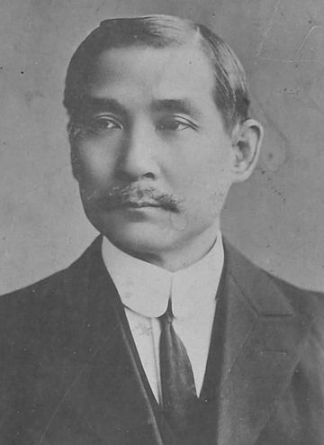
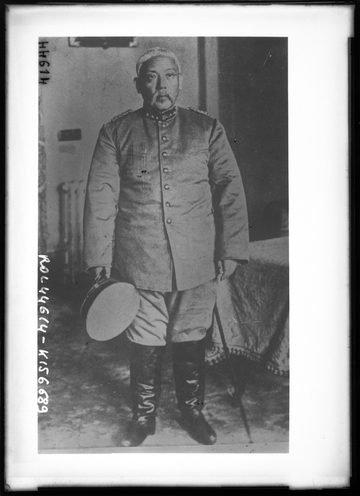
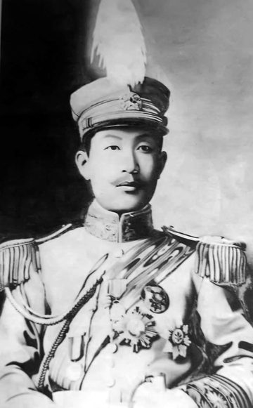
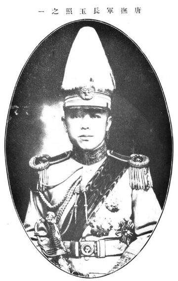
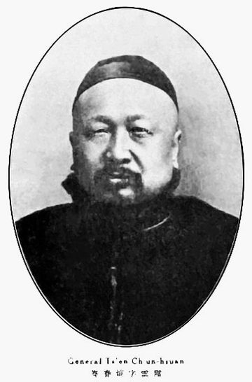

Article 1 · Historical background
Rifles, loans and telegrams: China in 1916 through a secret code
Some twenty telegrams exchanged between Tokyo and southern China from June to November 1916, intercepted by Japan, have just been deciphered. To understand what they tell us, we first need to understand a China in the middle of civil war, a Japan playing on several boards at once, and a telegraph that only transmits numbers.
Passages underlined with dots are hypotheses or information we have not been able to confirm from a source.
A telegram in Tokyo, 19 July 1916
Late in the afternoon of 19 July 1916, a clerk of the Japanese Imperial Government Telegraphs copies out by hand a message handed in at Tokyo for Canton. The address is a string of numbers: 6511 0523 7108 5128 1989. The body begins with two more numbers, 2429 1378, followed by eight ten-letter "words" with no apparent meaning: fazihipego wezelucuna hamodarodo… The form is signed, in Japanese characters, 関正雄.
This form was not kept by the telegraph office but by the Japanese Ministry of Foreign Affairs, in a file titled "Investigation of mail sent and received by certain persons". The Ministry of Communications passed it copies of the telegrams of people under surveillance[3]. The file contains no translation: the Japanese seem to have copied and filed these messages without reading them; no Japanese decipherment of this system has been found to date.

2429 1378 reads 文密, "Wen cipher".Once deciphered, this twenty-character Chinese message says roughly this:
報傳取消日人態度遽變確否速示俾便行止伸
"A cancellation is reported; the attitude of the Japanese has suddenly changed. Tell me quickly whether this is true, so that I know what to do. — Shen."
Who is this "Shen", worried about the mood of the Japanese? What might be cancelled? And who is he writing to in Canton? To answer, we have to go back five years.
China from 1911 to 1916, in a few minutes
From empire to republic
In 1911 China is still an empire, ruled since 1644 by the Manchu Qing dynasty. In October 1911 a mutiny at Wuchang sets off the 1911 Revolution (the Xinhai revolution): within months most provinces declare independence from Beijing, and the last emperor, a six-year-old child, abdicates in February 1912.
The great symbol of the revolution is Sun Yat-sen (孫文, Sun Wen; also known as Sun Zhongshan). A physician trained in Hong Kong and a conspirator since the 1890s, he spent most of his life in exile, raising funds among overseas Chinese and in Japan. He is briefly provisional president of the Republic in Nanjing, then hands over to the strongman of the North, General Yuan Shikai, who controls the modern army and has secured the emperor's abdication.
Yuan Shikai wants to be emperor
Yuan rules more and more alone. In 1913 the leader of the Nationalist Party (Guomindang), Song Jiaoren, is assassinated, a murder generally attributed to Yuan's circle; Yuan then crushes a "second revolution" led by Sun's supporters, and Sun goes back into exile in Japan. At the end of 1915 Yuan goes further: he has himself proclaimed emperor, under a new reign name, Hongxian, to begin on 1 January 1916.
The "National Protection War"
It is a resounding failure. On 25 December 1915 the province of Yunnan, in the far south-west on the border of French Indochina, rises up. Its military governor Tang Jiyao and General Cai E launch the National Protection War (護國戰爭). Other southern provinces follow: Guizhou, Guangxi, then part of Guangdong (the province of Canton). On 22 March 1916 Yuan gives up the throne; but the southern provinces now demand that he step down.
On 8 May 1916 the insurgents create a joint body, the Military Affairs Council (軍務院, Junwuyuan), based at Zhaoqing, a town in Guangdong west of Canton. Tang Jiyao is its nominal head, but his deputy, the veteran mandarin Cen Chunxuan, runs it on the spot. The Council is a kind of counter-government of the South: it needs weapons, money and recognition by the foreign powers.
After Yuan
Yuan Shikai dies of illness on 6 June 1916. Vice-president Li Yuanhong succeeds him; General Duan Qirui becomes prime minister and the 1912 constitution is restored. The Military Affairs Council announces its own dissolution on 14 July 1916. But nothing is settled: the southern generals remain armed and quarrel over the spoils, especially the province of Canton, where governor Long Jiguang, a late and reluctant convert, refuses to give way.
- Revolution, abdication of the emperor; Sun Yat-sen, then Yuan Shikai, president.
- Failure of the "second revolution"; Sun in exile in Japan.
- Yuan proclaims himself emperor; Yunnan rises on the 25th.
- Japan decides to help Yuan's opponents; Yuan gives up the throne on the 22nd.
- The Japanese consulate in Hankou reads Sun's enciphered telegrams ("−111" method).
- The Military Affairs Council is set up at Zhaoqing.
- Japanese arms contracts for the South; second contract in June.
- Death of Yuan Shikai.
- The deciphered 文密 telegrams: Tokyo → Zhaoqing, Canton, Shanghai and Kunming (Yunnan), and replies from Yunnan.
- The Military Affairs Council announces its dissolution.
- Death of General Cai E at Fukuoka, Japan, where he had gone for treatment.
- The name 文密 reappears on Sun ↔ Dai Jitao telegrams (channel not broken).
Japan: ally, supplier and spy
In 1916 Japan is the great power of East Asia. Fighting in the Great War on the Allied side, it took advantage of the Europeans' absence to impose the "Twenty-One Demands" on Yuan Shikai in 1915, making itself the sworn enemy of Chinese public opinion. When Yuan tries to become emperor, the Japanese government of Count Ōkuma decides, in March 1916, to support his opponents.
This support runs through unofficial channels: loans from trading houses and arms deliveries on credit. A recent study by historian Cheng Honglei (承紅磊, Sun Yat-sen University) reconstructs the details from Japanese archives[7]: contracts with Mitsui and the Taihei Kumiai, a consortium of arms dealers; a second contract signed in June 1916; the division of weapons between Yunnan and Guangdong; and a financial guarantee refused by Long Jiguang.
To follow these negotiations, the southern Council keeps resident commissioners in Tokyo. One of them is Zhao Shen (趙伸), former director of the Yunnan arsenal, who represents both Tang Jiyao and Cen Chunxuan in Tokyo[7]. He is the "Shen" who signs our telegrams. The forms themselves confirm it: several bear his name, 趙伸, and his Tokyo address, "care of Seki, Aoyama Minami-chō 4-21"; a telegram from Yunnan in November 1916 is addressed to him in Latin letters: "Chaosian c/o Sekimasao, 21 Aoyamaminamicho, Tokio".
While helping the insurgents, the Japanese state also watches them. Telegrams they hand in at Japanese offices are copied for the Foreign Ministry; the signature at the bottom of the form is that of Seki Masao (関正雄), at whose house Zhao Shen lives in Tokyo; who he was beyond this role of host and signatory is unknown. And some Japanese diplomats try to read what they intercept: in the spring of 1916, the consulate-general in Hankou finds the key to Sun Yat-sen's telegrams[5][6].
A telegraph that only knows numbers
The telegraph was invented for alphabets. How do you transmit a language written with thousands of characters? The answer adopted in China from the 1870s is the Chinese telegraph code: a public book gives each character a four-digit number. 文 ("writing, culture", and also Sun Wen's given name) is 2429; 密 ("secret") is 1378. The sender turns the text into numbers, the operator sends the digits, and the recipient turns them back with the same book[10].
This code is not secret: anyone can buy the book. To hide a message, you have to transform it further. The simplest method is to add an agreed number to each code. That is what Sun's circle does in April 1916: each code is increased by 111. The Hankou consulate notices and decodes everything by subtracting 111. On 10 May the conspirators change method: they reverse the four digits before adding 111. The consul works this out too and reports it to Tokyo on 11 May: 0452 reversed is 2540, minus 111 gives 2429, that is 文, Sun's signature[6].
Dating without digits: the rhyme of the day
Every telegraph word cost money. To date a message with a single character, the Chinese used an elegant convention, 韻目代日: the days of the month are numbered by the "rhymes" of a classical poetry dictionary, in an order every educated person knew. 元 means the 13th, 巧 the 18th, 漾 the 23rd, 文 the 12th. Most of our telegrams end this way: signature, then rhyme of the day. This was one of the checks on the decipherment, since the date written in clear by the Japanese clerk on the form must match the enciphered rhyme.
The 文密 of July 1916 adds one more layer: instead of sending digits, it turns them into Latin letters. The reasons for this choice are not documented; a cheaper tariff, or a wish to attract less attention than a string of numbers, are possible explanations. The second article explains how this layer works and how it was recovered.
Forgotten intercepts, and a first codebreaker
The Japanese copies are now digitised and freely available from the Japan Center for Asian Historical Records (JACAR), which publishes Japan's diplomatic archives online[3][4]. The Japanese cryptology historian S. Tomokiyo had already pointed out the Hankou decipherments and described the code "condenser" used by Sun and his Japanese friend Yamada Junzaburō[8][9].
Daniel Bourdeau's work. In September 2026 Daniel Bourdeau published "Sun Yat-sen's circle on the wire, 1916–17"[1], with his transcriptions and code openly available[2]. He deciphers, in whole or in part, some sixty telegrams from March 1916 to March 1917, written with a family of "condensers" of twenty consonants and five vowels, and identifies several keys of that family. He also flags the 文密 system, recognisable by its ten-letter words, the consonant w and a y used as a vowel, and reports that it resists his methods.
Our investigation started there: from his finds in the archives, his list of messages, his method (testing a key on telegrams that were not used to find it, checking dates through rhymes) and his honest conclusion that 文密 remained to be done. Without his work, this site would not exist.
The people










Period portraits (Wikimedia Commons, public domain). Zhao Shen and Seki Masao, for whom we found no portrait, are not shown.
- Zhao Shen 趙伸
- Resident commissioner of the Military Affairs Council in Japan, former director of the Yunnan arsenal, representative of Tang Jiyao and Cen Chunxuan in Tokyo. He signs 伸 (Shen). Identified thanks to Cheng Honglei[7], after the decipherment, then confirmed by the forms (name and address).
- Seki Masao 関正雄
- Signatory of the forms in Tokyo and Zhao Shen's host, who lives "care of Seki", Aoyama Minami-chō 4-21; the telegram of 23 June asks for replies to be sent directly to him. His identity beyond this role remains to be established.
- Cen Chunxuan 岑春煊
- Former senior imperial official, effective head of the Military Affairs Council at Zhaoqing. Recipient of the telegram of 13 September.
- Tang Jiyao 唐繼堯
- Military governor of Yunnan, nominal head of the Council. Yunnan (滇 in the telegrams) is the province whose interests Zhao Shen defends. Recipient of most telegrams of the second channel, in Kunming.
- Cai E 蔡鍔
- General, military leader of the Yunnan uprising of December 1915. Ill, he went to Japan for treatment and died at Fukuoka on 8 November 1916; a telegram of the second channel announces his death to Yunnan.
- Li Genyuan 李根源
- Yunnanese officer, member of the Council. The telegram of 30 September bears in clear the name 李印泉; Yinquan was his courtesy name, making him the probable recipient.
- Long Jiguang 龍濟光
- Governor of Guangdong (粵), a Yuan loyalist who switched sides late; he refuses to guarantee the Japanese loans.
- Koike Chōzō 小池張造
- Director of political affairs at the Japanese Foreign Ministry. A "Koike" (小池) appears in the telegram of 23 June; identifying him with Koike Chōzō is a hypothesis.
- Sun Yat-sen 孫文
- Founder of the Republic, back in Shanghai in the spring of 1916. The telegram of 12 July, sent to the Shanghai newspaper 中華新報, is signed 文, as Sun Wen signed his own; whether he is its author or its recipient remains to be established.
What the telegrams of the first channel say
The translations below are working translations. Telegraphic Chinese is extremely terse, and about twenty characters remain uncertain (hard-to-read form, or rare character). Words in square brackets are interpretations; "[…]" marks a passage left untranslated for lack of a secure reading.

23 June 1916 — Eleven thousand rifles arrived at Moji
"Eleven thousand Type 30 rifles and military supplies have arrived at Moji. The price is treated as a temporary loan at ten per cent annual interest, without guarantee; only Koike is pushing the deal and awaits your decision. […] Do not refuse under any circumstances, to avoid having to pay compensation. Furthermore, the private secret code has been transmitted. Reply directly to Seki Masao. — Shen. The 23rd."
The Type 30 is the former service rifle of the Japanese army (1897 model), since replaced by the Type 38: Japan was presumably selling off surplus stock. Moji is the great port of northern Kyūshū. The most delightful line for a cryptologist: Zhao Shen announces that the "private secret code" has been transmitted. He may be talking about the very system he is writing in.
30 June 1916 — Weapons and aircraft
"Your telegram has arrived. The weapons and aircraft […] can arrive on the […]. It is advisable to return to Shanghai […] will come to Japan again. Shen remains […]."
The least certain of the seven: four characters remain doubtful. The enciphered date at the end says "20", whereas the Japanese clerk wrote "30/6" on the form; both readings have been re-checked on the image, and the gap remains unexplained: an encoding error, or a message drafted on the 20th and handed in on the 30th.
12 July 1916 — The held-out message
"Duan [Qirui] has neither the sincere will nor the ability to form the cabinet. The Japanese government now shares this view; the misunderstanding regarding the Military Affairs Council and the South as a whole has […] been dispelled. From now on, as long as the agreed plan is not changed, the final assistance can be hoped for. […] There is no longer any obstacle to action. […] — Wen. The 12th."
This telegram, addressed to the Shanghai newspaper 中華新報 for forwarding, has a special status: it was never used to work out the key. The fact that it reads as continuous Chinese under the key found on the others is the main proof of the decipherment (see the second article). Its content reflects the political situation of July 1916 and the Japanese promise to see the aid through; the first sentence, about Duan Qirui (already prime minister at the time), still has to be checked against historical sources.
18 July 1916 — "Everyone blames Yunnan"
"According to the telegram from Yamagata received by the General Staff, the weapons of this shipment have not all arrived. Yunnan's difficulties are beyond words; the General Staff itself is very disappointed. When Shen was in Yunnan, a division had already been promised. […] Everyone blames Yunnan […]. We urge you to distribute the aid in the agreed quantities, to avoid criticism. What do you say? — Shen. The 18th."
Cheng Honglei quotes a Japanese report saying that Yunnan "suffers from having to share half of the weapons with Guangdong"[7]: exactly the subject of this telegram. "Shen" pleads for his province.
19 July 1916 — "The attitude of the Japanese has suddenly changed"
"A cancellation is reported; the attitude of the Japanese has suddenly changed. Tell me quickly whether this is true, so that I know what to do. — Shen."
The same day, Zhao Shen sends the same message to Yunnan through the other channel (see below), more explicitly: what the newspapers report is the abolition of the Military Affairs Council, and the Japanese change their attitude at once. The telegram is addressed to the Council at Zhaoqing. Its enciphered date contains one wrong letter, corrected thanks to this twin telegram.
13 September 1916 — "Purchased on behalf of Yunnan"
"The apparatus is purchased on behalf of Yunnan. If the General Staff enquires by telegram, please reply approving it. — Shen. The 13th."
The only message that is entirely secure, addressed to Cen Chunxuan at Zhaoqing. The word translated as "apparatus" (攝機) may mean cameras or some other equipment.
30 September 1916 — "Our credit would be ruined"
"Your telegram is received. For the vehicle supplies arranged earlier and the loan contracted with Xinghua, please proceed as agreed; otherwise our credit with Yunnan will be ruined. The Guangdong affair being over, please hand over to Yunnan the second batch of weapons arranged earlier, so as not to give grounds for criticism. What is the situation? Awaiting your reply. — Shen. The 30th."
The war is over, but the bills must be paid. The "second batch of weapons" refers to the second contract of June 1916 described by Cheng Honglei[7].
Taken together, the seven messages of this first channel tell one story, seen from Tokyo: a Yunnan representative receiving Japanese weapons on credit, worrying about Tokyo's changes of heart, fighting to keep his province from losing out to Canton, and, by the autumn, demanding that the debts be honoured.
The second channel: Tokyo ↔ Yunnan
Zhao Shen also wrote directly to Yunnan, to Governor Tang Jiyao and the provincial administrations, with another key: the same name, 文密, but with a y used as a vowel. This channel was broken in turn on 11 October 2026 (see the second article). Its texts, fully re-read by a human on the forms, are nonetheless less certain than those of the first channel: many characters remain doubtful. Passages marked "partial reading" are fragments only.
19 July 1916 — "Ten thousand rifles"
"The ten thousand rifles requested by Yunnan can be obtained; but as the newspapers report the abolition of the Military Affairs Council, [Japanese] policy has suddenly changed. Is it true? Tell me quickly, so that I know whether to act or stop. — Shen. The 19th."
The twin of the telegram sent to Zhaoqing the same day, but more precise: it says what "might be cancelled" and what is at stake, ten thousand rifles for Yunnan.
July – October 1916 — Aircraft, wireless, medals and a loan
As early as 17 July, Zhao Shen proposes creating an aviation corps for Yunnan: four military aircraft and a Japanese instructor, the aviator Suzuki Shigeru, with funds to be raised in Tokyo. On 8 September he reports ordering six military aircraft of the latest type and eight wireless sets. On the 13th he answers the governor:
"Telegram of the 11th received. The matter of the weapons and aircraft has not yet been concluded; it is difficult for me to return right away. As for the assembly, have the vice-president stand in according to the rules; do not go. — Shen. The 13th."
In October there is talk of commemorative medals at 9,500 yuan ("please remit the funds"), then of a loan at 8 per cent, "without guarantee", whose contract Zhao Shen would sign and which needs the central government's approval (partial readings).
9 November 1916 — The death of Cai E
"Forward to the provincial assembly and the newspapers: … Lord Cai died of illness at Fukuoka on the 8th, at two in the morning; his merits are as high as a mountain. It must be announced throughout Yunnan, with sincere mourning, and the arrangements and commemoration carefully prepared. — Shen."
Cai E, the general who had launched the uprising against Yuan Shikai, had come to Japan for treatment; he died at Fukuoka on 8 November 1916. This telegram was never used to find the channel's key. That, under this key, it announces an exact historical fact is the strongest proof of this second decipherment.
November 1916 — Going home, and Yunnan's reply
"I plan to return south on the 10th. Respectfully. — Shen. The 5th."
The same day, a telegram sent in clear says the same thing at greater length: leaving on the 10th, arriving in Yunnan at the end of the month (十號起程月末抵滇). It was this plaintext message that provided the first footholds for the key. On 9 November Yunnan answers his telegrams of 30 October and 1 November about the loan, in four points: two to three million [yuan], interest of 6 to 7 per cent a year, repayment over at least three years, a discount of at most 98; and "the annual interest can be eased a little further". On the 11th, Zhao Shen still mentions the war in Europe, the mortgage, the difficulty of finding a lender, and his return.
The second channel thus completes the first: it shows Zhao Shen negotiating not only rifles but military aircraft and a loan for Yunnan, until his departure from Tokyo announced for mid-November 1916.
What we know, what we don't
State of knowledge
- Established: the principle of both 1916 ciphers (Tokyo → Zhaoqing, G0 grid; Tokyo ↔ Yunnan, Y0 grid); most of the text of the seven telegrams of the first channel; the identity of the sender, Zhao Shen.
- Uncertain: 19 characters out of 351 in the first channel; many doubtful characters in the second; the date of the 30 June message ("20" enciphered).
- Hypotheses: the identity of Koike, of Yamagata, of the author of the message signed "Wen", and of Seki Masao.
- Not broken: the 1917 messages bearing the same name (Sun Yat-sen ↔ Dai Jitao, images 0509 and 0511), which use a different alphabet.
How can we be sure we have not simply "seen" Chinese where there was none? That is the central question of the second article, which details the method, the failed attempts and the controls.